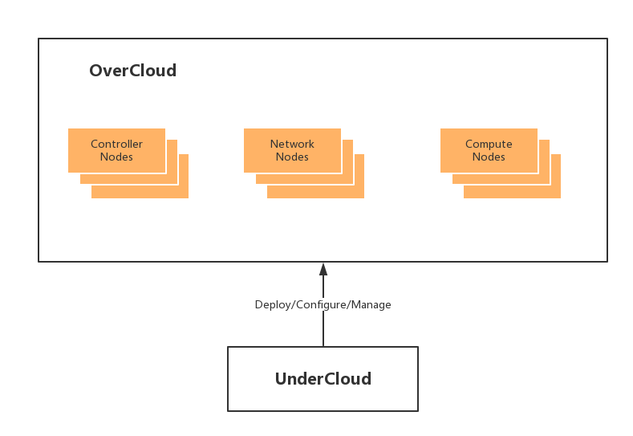

1. UOS Director 简介¶
UOS Director 是一套用来部署和管理 OpenStack 集群的工具集，它是基于社区的 OpenStack TripleO 开发的，TripleO 是“OpenStack-On-OpenStack”的缩写形式，意思是使用 OpenStack 来部署和管理 OpenStack，因为 OpenStack 本身是一个 IaaS 平台，他有管理裸机的能力，裸机属于计算能力的一部分，加上本身就具有的网络和存储的管理能力，因此可以充分利用 OpenStack 的特性来部署一套 OpenStack 集群，并且具备管理能力，OpenStack 开发的很多新特性可以无缝的集成进 UOS Director 中，目前 UOS Director 集成了 OpenStack、Ceph、UOS 自研项目以及监控、日志、告警等运维工具的自动化部署，它将复杂的 UOS 系统的部署交付，变得简单化，同时具有高度的确定性和可控性。
UOS Director 的架构中，主要有两部分组成：UnderCloud 和 OverCloud，这两个 Cloud 分别是一个 OpenStack 环境，UnderCloud 是用来安装和配置 OverCloud 的，OverCloud 就是我们最终交付的环境。如下图：
1.1. UnderCloud¶
UnderCloud 是一个单机版的 OpenStack，它包含了很多 OpenStack 组件，实现的功能主要用来管理和部署 OverCloud 的节点，这些功能包括:
- 角色定制
- 裸机管理
- 编排能力
- 网络定制
- 命令行和界面
- API 化
1.1.1. 角色定制¶
UnderCloud 通过节点角色（role）能够灵活的定制将要部署的云环境，可以指定哪些节点承担什么角色，它本身包含一些默认的节点角色，比如控制节点、计算节点、存储节点等，除此之外，还可以自定义角色，指定哪些角色包含哪些服务，更加灵活的定制你的环境。
1.1.2. 裸机管理¶
UnderCloud 通过 Ironic 组件实现了裸机管理能力，主要用来管理 OverCloud 中的物理节点，他的原理是通过 IPMI 来控制裸机，并且通过 PXE 装机。
1.1.3. 编排能力¶
UnderCloud 通过 Heat 组件实现编排，Heat 使用 YAML 模版来定义整个集群的信息，UnderCloud 通过执行这些模版来创建出最终的 OpenStack 环境，当然你也可以定制自己的模版，这是整个部署具有确定性和可控性的基础。
1.1.4. 网络定制¶
UnderCloud 利用 Neutron 提供的组网功能，将 OverCloud 抽象出多个网络，包括管理网、外部网络、内部网络、存储网络、租户网络等，这些网络划分能够很灵活的满足 OpenStack 所需要的各种网络定制需求。
1.1.5. 命令行和界面¶
UnderCloud 本身就是一个单机版的 OpenStack 平台，在 OpenStack 上使用的命令行工具和界面，都适用于 UnderCloud，主要通过这些工具来管理 OverCloud。
1.1.6. API¶
UnderCloud 本身是有多个 OpenStack 组件组合在一起使用的，因为组件众多，做一个操作会涉及到很多组件的很多 API，这导致在安装部署时，没有统一的 API 接口，因此 UnderCloud 集成了 Mistral，将多个操作组织成工作流任务，对外提供一个简单的 API，这使得部署过程可以 API 化。
此外，UnderCloud 还集成了 Swift、Zaqar、Ceilometer 等组件，将 OpenSttack 的各个能力充分应用到 OpenStack 本身上。
1.2. OverCloud¶
OverCloud 是由 UnderCloud 安装部署出来的，也是我们最终要交付的环境，通过 UnderCloud 的角色定制能力，可以灵活定制各种角色的节点，目前 UOS Director 包含以下几种角色：
- 控制节点
- 计算节点
- 网络节点
- 存储节点
- 控制网络融合节点
- 计算存储融合节点
1.2.1. 控制节点¶
控制节点提供整个 OpenStack 的控制平面，包括各种管理功能，支持高可用，在生产环境中，建议部署成由三个节点组成的高可用环境，控制节点默认包含以下组件：
- 管理面板（Halo/Horizon）
- 认证服务（Keystone）
- Nova API
- Neutron Server
- 镜像服务（Glance）
- 块存储服务（Cinder）
- 编排服务（Heat）
- 监控计量服务（Ceilometer/Gnocchi/Aodh）
- 通知服务（Kiki/Zaqar）
- Ceph Monitor（Ceph）
- 数据库（MariaDB/Gleara）
- 高可用组件（Pacemaker/HAProxy）
- Zabbix Agent
- Fluentd
1.2.2. 计算节点¶
计算节点为平台提供计算资源，底层是使用 KVM 虚拟化技术提供的计算能力，计算节点是可以进行灵活伸缩的，默认包含以下组件：
- Nova Compute
- KVM/QEMU/Libvirt
- Ceilometer Compute Agent
- Neutron OpenvSwitch Agent
- OpenvSwitch
- Zabbix Agent
- Fluentd
1.2.3. 网络节点¶
网络节点为平台提供网络资源，包括二层网络，三层路由，以及 DHCP 等服务，支持高可用，在生产环境中，建议部署成由三个节点组成的高可用环境，网络节点默认包含以下组件：
- Neutron DHCP Agent
- Neutron L3 Agent
- Neutron Metadata Agent
- OpenvSwitch
- Neutron OpenvSwitch Agent
- Zabbix Agent
- Fluentd
1.2.4. 存储节点¶
存储节点为平台提供存储资源，每个节点包含多个 Ceph 的 OSD 组件，组成整个存储集群，该节点默认包含以下组件：
- Ceph OSD
- Zabbix Agent
- Fluentd
1.2.5. 控制网络融合节点¶
在集群规模较小时，集群压力较小，可以将控制节点和网络节点融合起来，以节省成本，融合节点包含以下组件：
- 管理面板（Halo/Horizon）
- 认证服务（Keystone）
- Nova API
- Neutron Server
- Neutron DHCP Agent
- Neutron L3 Agent
- Neutron Metadata Agent
- Neutron OpenvSwitch Agent
- OpenvSwitch
- 镜像服务（Glance）
- 块存储服务（Cinder）
- 编排服务（Heat）
- 监控计量服务（Ceilometer/Gnocchi/Aodh）
- 通知服务（Kiki/Zaqar）
- Ceph Monitor（Ceph）
- 数据库（MariaDB/Glaera）
- 高可用组件（Pacemaker/HAProxy）
- Zabbix Agent
- Fluentd
1.2.6. 计算存储融合节点¶
在集群规模较小时，集群压力较小，可以将计算节点和存储节点融合起来，以节省成本，融合节点包含以下组件：
- Nova Compute
- KVM/QEMU/Libvirt
- Ceilometer Compute Agent
- Neutron OpenvSwitch Agent
- OpenvSwitch
- Ceph OSD
- Zabbix Agent
- Fluentd
1.3. OverCloud 高可用¶
UOS Director 提供完备的高可用功能，涵盖控制、计算、网络、存储的各个服务，通过将各个组件部署在多个节点上，统一对外提供服务，对客户端是透明的，这样确保没有单点故障。
1.3.1. 物理网络高可用¶
首先是最关键的物理网络的高可用，UOS Director 对物理网络的设计采用全冗余的物理网络拓扑，交换机通过堆叠技术将多个交换机组合成一个，避免交换机的单点故障，服务器通过网卡做 bonding，并且链路聚合做双上联到接入交换机，避免服务器网卡故障，通过交换机和网卡的全冗余设计，确保了物理网络的可靠性。
1.3.2. 控制节点高可用¶
高可用使用到的组件有：
- Pacemaker 是一个集群管理工具，可以提供主主，主备等多种模式的高可用策略，它管理了 OpenStack 一些组件的高可用，当节点故障时，能够隔离或者切换服务到正常节点
- HAProxy 为一些组件提供负载均衡以及代理服务，比如各个组件的 API 和 MariaDB 等
- Galera 为 MariaDB 数据库提供集群复制功能，可以提供主主的高可用机制
- Memcached, 为集群提供缓存服务
- Redis 为集群的服务协作提供后端存储
1.3.3. 计算节点高可用¶
计算节点的高可用指在节点故障时，需要第一时间对虚拟机进行迁移，在 UOS 云平台中，使用 Pacemaker 对计算节点的状态进行监控，一旦检测到宿主机宕机，就需要执行 evacuate，对虚拟机进行迁移。
1.3.4. 网络节点高可用¶
Neutron 中 DHCP 服务、L3 服务都支持高可用特性，DHCP 协议本身就是支持高可用的，在多个节点上起相同配置的 DHCP 服务，通过抢先应答客户端的请求来实现高可用。L3 服务以主备（Master/Slave）模式工作在多个节点，通过 VRRP 协议来实现主从状态的同步和选主来实现高可用，因此使用到的组件主要有：
- Keepalived
- Dnsmasq
1.3.5. 存储节点高可用¶
Ceph 本身支持高可用，Ceph 所有组件被设计为非单点的，当一个存储节点故障，集群仍然可以对外正常提供服务，当集群添加或删除节点时，可以自动迁移数据，进行数据负载平衡。